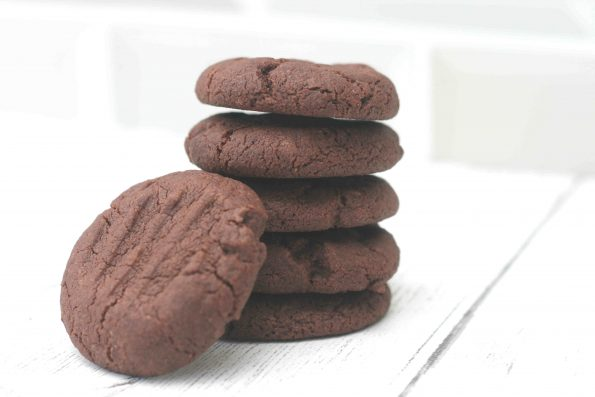

Ingredients
- 100g (½ cup) butter, softened
- 50g (¼ cup) caster sugar
- 125g (1 cup) Self raising flour
- 15g (1/8 cup) cocoa powder
Procedure
- Measure the butter and sugar and add them to a large mixing bowl. Beat the butter and sugar together with a wooden spoon until it's well mixed and soft.
- Weigh the flour and cocoa powder and add them to your mixing bowl. Keep using your spoons to mix it in, then you can use your hands to bring it all together in a soft ball of dough.
- Take small pieces of dough and roll them into balls. You want them to all be roughly the same size (about the size of a walnut.)
- Place the balls of dough on the prepared baking tray. Dip a fork in cold water and gently press down on each biscuit ball.
- Bake the chocolate biscuits in the oven for 12-15 minutes until they are fully baked. They'll still be a little soft when they come out the oven but will harder a little when they cool.
- Remove them from your oven, allow them to cool slightly before leaving them to cool completely on a wire rack.